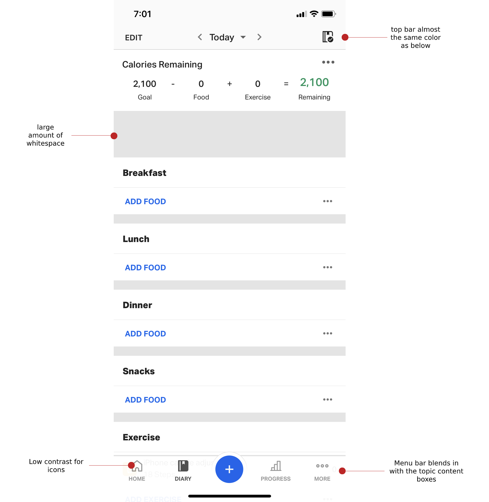
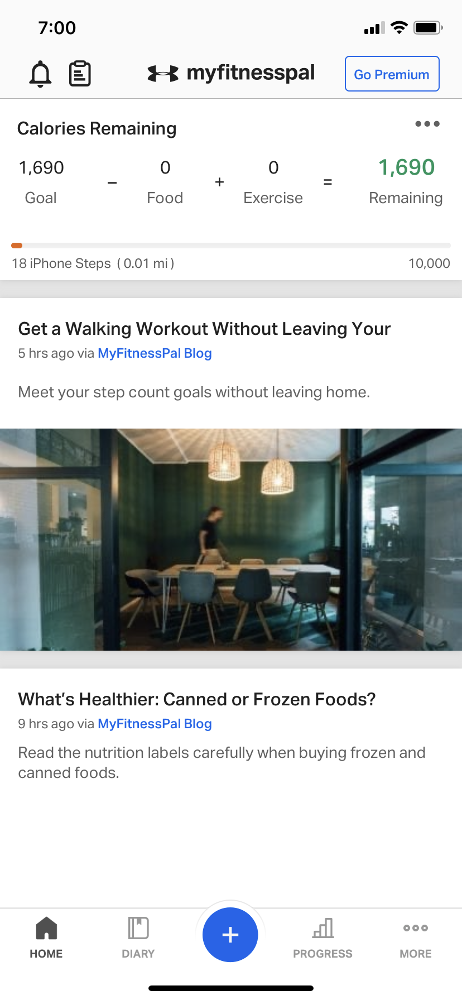
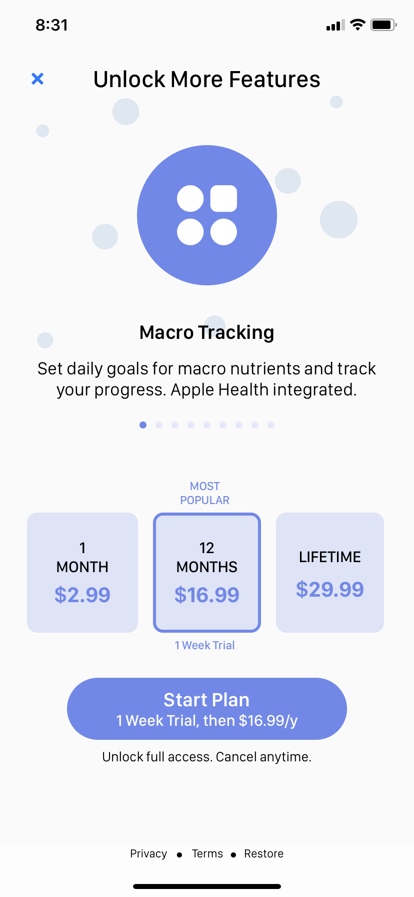
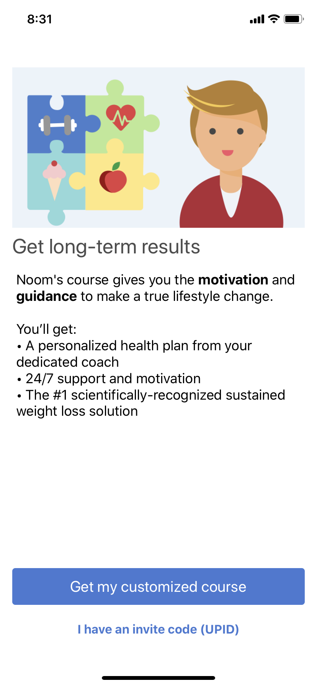
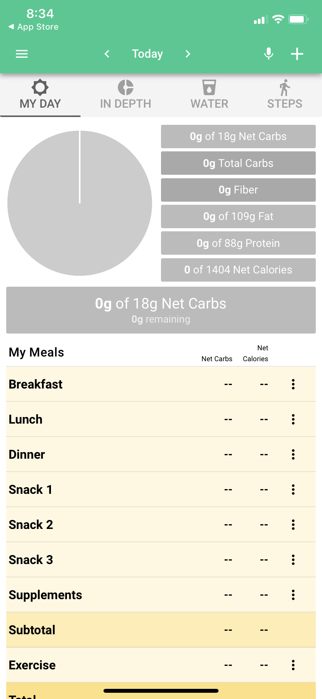

Research
Reviews


In MFP's v. 29.5.0 (March 2020), the current user interface is unappealing and difficult to
navigate. The home page is cluttered, and the blog picture doesn't show up (on the right).
Interviews
11 of my friends, who in age range from their 20's to early 30's. 5 of them were first-time
users. The others were familiar with or have used the app before.
I asked users:
- What do they use MFP for?
- Why do they use MFP over other ones (if this is their preferred fitness app)?
- What did they dis/like about MFP?
- What is their most/least used feature(s)?
- What feature(s) did they find difficult to use?
All of the users said they used it to log food to track their calorie-intake. About half used it to look further
into their calories, such as tracking macros by protein, fats, and carbs. Otherwise, they rarely used it to log
workouts. This can be influenced by a UI that isn't appealing.

Competitive Analysis
MFP offers features, such as changing food/water/weight units, that other fitness apps consider
a “Premium” feature. For example, MFP allows you to change units, whether it's for water, food, or weight.
Other fitness apps require a subscription to continue using their app beyond a trial period (Calory, Noom, Carb Manager).
MFP also ranks the highest for usability and the most matches with USDA in their food database.


